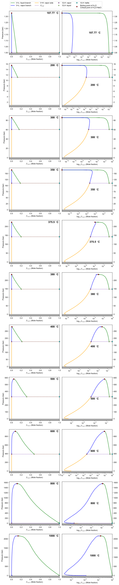
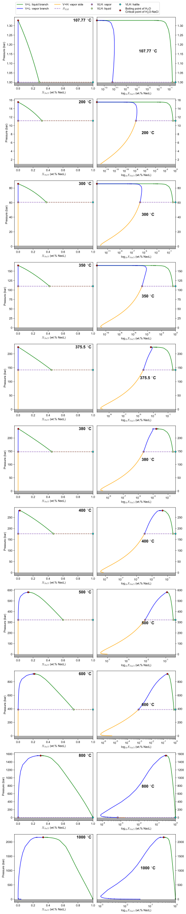

Note
Click here to download the full example code
4. Vapor + Liquid coexistence surface
Calculate VL surface and properties, and compare result with [Driesner, 2007].
Python code
import os
import numpy as np
import time
import linecache
import matplotlib.pyplot as plt
import matplotlib as mpl
from matplotlib import patches
import matplotlib.ticker as ticker
from matplotlib.ticker import MultipleLocator
from matplotlib.patches import Patch
from tabulate import tabulate
import copy
import warnings
warnings.filterwarnings("ignore", category=RuntimeWarning)
# 3d plot
import helpfunc
mpl.rcParams['font.family'] = 'Arial' # default font family
mpl.rcParams['mathtext.fontset'] = 'cm' # font for math
dpi=400
fmt_figs = ['pdf'] # ['svg','pdf']
figpath = '.'
result_path='../../../gallery_H2ONaCl/pT'
def savefig(figname):
for fmt_fig in fmt_figs:
figname_full = '%s/%s.%s' % (figpath, figname, fmt_fig)
plt.savefig(figname_full, bbox_inches='tight',dpi=dpi)
print('figure saved: ', figname_full)
compare = lambda a,b : float(str('%.6e'%(a)))-float(str('%.6e'%(b)))
# Import package of xThermo
from xThermo import H2O
from xThermo import NaCl
from xThermo import H2ONaCl
sw_84 = H2ONaCl.cH2ONaCl("IAPS84")
sw_95 = H2ONaCl.cH2ONaCl("IAPWS95")
def plot_3d(sw,scale='linear'):
fig=plt.figure(figsize=(14,14))
ax = fig.add_subplot(111,projection='3d',facecolor='None')
xcenter=1 # X<1% wt.% use log scale, if X>=1% wt.% NaCl, use linear scale
axtrans=[]
if(scale=='loglinear'):
axtrans=helpfunc.set_axis_diagram_3D_loglinearx(ax,xcenter=xcenter,ratio_log_lin=(1,1),xMajor_loc_log=2,xMajor_loc_linear=10,xMinor_loc_linear=2,xlim=(1E-16,100),yMajor_loc=200,zlim=(5,2500),ylim=(90,1000),xlabel='log$_{\mathregular{10}}$(Wt.% NaCl)')
else:
helpfunc.set_axis_diagram_3D(ax)
transform_X = lambda X : helpfunc.data2axis_loglin(axtrans,X) if(scale=='loglinear') else X
# plot VLH surface as reference
T = np.linspace(H2ONaCl.T_MIN_VLH, sw.Tmax_VLH(), 100)
P_vlh = np.array(sw.P_VLH(T))
Xl_vlh, Xv_vlh = np.array(sw.X_VLH(T,P_vlh))
# plot
n_log,n_linear=20,40
X = np.linspace(H2ONaCl.X_MIN, H2ONaCl.X_MAX, n_log+n_linear)
TT,XX = np.meshgrid(T, X)
PP = np.zeros_like(TT)
for i in range(0,PP.shape[0]):
PP[i,:]=P_vlh
# # 1. vapor -> liquid region
# for j in range(0,PP.shape[1]):
# XX[:,j] = np.append(10**np.linspace(np.log10(Xv_vlh[j]),np.log10(xcenter/100),n_log), np.linspace(xcenter/100,Xl_vlh[j],n_linear))
# xx_plot = transform_X(XX*100)
# ax.plot_surface(xx_plot,TT-273.15,PP/1E5,color='lightblue',alpha=0.9)
# # ax.plot_wireframe(xx_plot,TT-273.15,PP/1E5,ec='b',lw=0.8,label='VLH: V->L')
# # 2. liquid -> halite region
# for j in range(0,PP.shape[1]):
# XX[:,j] = np.linspace(Xl_vlh[j], 1,len(X))
# xx_plot = transform_X(XX*100)
# ax.plot_surface(xx_plot,TT-273.15,PP/1E5,color='orange',alpha=0.9)
# ax.plot_wireframe(xx_plot,TT-273.15,PP/1E5,ec='orange',lw=0.8,label='VLH: L->H')
# # 3. Halite saturated vapor in VH region
# P = np.linspace(0,1,40)
# TT,PP = np.meshgrid(T,P)
# for i in range(0,len(T)):
# PP[:,i] = np.linspace(sw.pmin(),P_vlh[i],len(P))
# XX_VH = np.array(sw.X_VH(TT.reshape(-1,),PP.reshape(-1,)))
# xx_plot = transform_X(XX_VH.reshape(TT.shape)*100)
# ax.plot_surface(xx_plot,TT-273.15,PP/1E5,color='pink',alpha=0.9)
# ax.plot_wireframe(xx_plot,TT-273.15,PP/1E5,ec='purple',lw=0.8,label='VH: vapor')
# halite
# ax.plot(transform_X(Xl_vlh*0+100), T-273.15, P_vlh/1E5, color='k',label='VLH: halite',lw=4)
# halite liquidus
ax.plot(transform_X(Xl_vlh*100), T-273.15, P_vlh/1E5, color='g',label='VLH: liquid',lw=4)
# upper pressure bound
ax.plot(transform_X(Xv_vlh*100), T-273.15, P_vlh/1E5, color='r',label='VLH: vapor',lw=4)
# # lower pressure bound
# Xv_pmin = np.array(sw.X_VH(T,T*0 + sw.pmin()))
# ax.plot(transform_X(Xv_pmin*100), T-273.15, T*0+sw.pmin()/1E5, color='blue',label='VH: vapor (P=%.0f bar)'%(sw.pmin()/1E5),lw=4)
# plot VL surface
for phase,color in zip([H2ONaCl.Liquid, H2ONaCl.Vapor],['green','lime']):
pb = sw.PhaseBoundary_VL_DeformLinear(phase)
TT,PP,XX = np.array(pb.T), np.array(pb.p), np.array(pb.X)
xx_plot = transform_X(XX*100)
ax.plot_surface(xx_plot,TT-273.15,PP/1E5, color=color, linewidth=0.1,ec='gray',alpha=0.9)
# legend
# leg=ax.legend()
# # change legend handle of wireframe of phase boundaries to wireframe hatch
# for i in [0,1,2]:
# leg.legendHandles[i]=Patch(facecolor='white', edgecolor=leg.legendHandles[i]._color,linewidth=0.0,label=leg.texts[i]._text,hatch='++++')
# ax.legend(handles=leg.legendHandles, loc='upper left',ncol=7)
# text
helpfunc.text3d(ax,(transform_X(1E-12),800,sw.pmin()/1E5),"P$_{min}$=%.0f bar"%(sw.pmin()/1E5),size=0.07,angle=-90,ec='None',fc='k')
ax.view_init(elev=25, azim=-145)
savefig('PhaseBoundary_VL_3D_%s'%(scale))
General 3D view: linear scale (left) and log-linear scale (right)
plot_3d(sw_84,scale='linear')
plot_3d(sw_84,scale='loglinear')


Out:
figure saved: ./PhaseBoundary_VL_3D_linear.pdf
figure saved: ./PhaseBoundary_VL_3D_loglinear.pdf
Benchmark comparison
Compare result of xThermo and [Driesner, 2007], and also compare result based on different EOS of water.
Python code
def plot_loglinearx(ax,x,y,x0,xticklabels=True,label='',**kwargs):
# colormap
norm = mpl.colors.CenteredNorm(vcenter=0)
cmap=copy.deepcopy(plt.get_cmap('bwr'))
cmap._segmentdata['red'][0,1:]=0
cmap._segmentdata['green'][0,1:]=1
cmap._segmentdata['blue'][0,1:]=0
# cmap._segmentdata['alpha'][1,1:]=0.5
# axes
ax.spines['bottom'].set_visible(False)
ax.xaxis.set_ticks([])
ax_log=ax.inset_axes([0,0,0.5,1])
ax_lin=ax.inset_axes([0.5,0,0.5,1])
CS=[]
cabs=np.abs(kwargs['c'])
factor=50
s=cabs/(cabs.max())*factor
s[s<(s.max()/factor)] = s.max()/factor
for ax0 in [ax_log,ax_lin]:
CS=ax0.scatter(x,y,cmap=cmap,norm=norm,s=s,clip_on=False,ec='None',**kwargs)
ax0.patch.set_facecolor('None')
ax0.set_yticks([])
ax.set_ylim(ax_lin.get_ylim())
ax_log.set_xscale('log')
ax_log.set_xlim(ax_log.get_xlim()[0],x0)
ax_lin.set_xlim(x0,ax_lin.get_xlim()[1])
for spine in ['left','top','right']:
for ax0 in [ax_log,ax_lin]:
ax0.spines[spine].set_visible(False)
# ax0.spines[spine].set_color('pink')
# ax_log.spines['right'].set_visible(True)
# ax_lin.spines['left'].set_visible(True)
if(not xticklabels):
ax_log.xaxis.set_ticklabels([])
ax_lin.xaxis.set_ticklabels([])
if(label!=''):
ax_cb=ax.inset_axes([0,1.02,1,0.05])
plt.colorbar(CS,cax=ax_cb,label=label,orientation='horizontal',extend='both')
ax_cb.xaxis.set_label_position('top')
ax_cb.xaxis.set_ticks_position('top')
return ax_log,ax_lin
def plot_diff_3D(ax,X,Y,Z,c,label=''):
norm = mpl.colors.CenteredNorm(vcenter=0)
cmap=copy.deepcopy(plt.get_cmap('bwr'))
cmap._segmentdata['red'][1,1:]=0
cmap._segmentdata['green'][1,1:]=0
cmap._segmentdata['blue'][1,1:]=0
cmap._segmentdata['alpha'][1,1:]=0.5
CS=[]
cabs=np.abs(c)
factor=50
s=cabs/(cabs.max())*factor
s[s<(s.max()/factor)] = s.max()/factor
CS=ax.scatter(X,Y,Z,c=c,cmap=cmap,norm=norm,s=s,ec='None',clip_on=False)
if(label!=''):
ax_cb=ax.inset_axes([0,1.02,1,0.05])
plt.colorbar(CS,cax=ax_cb,label=label,orientation='horizontal',extend='both')
ax_cb.xaxis.set_label_position('top')
ax_cb.xaxis.set_ticks_position('top')
def benchmark_VL(sw,mmc4='../Driesner2007b/1-s2.0-S0016703707002955-mmc4.txt'):
# compare
if(not os.path.exists(mmc4)):
print('Please set correct mmc1 file path: %s'%(mmc4))
exit()
data=np.loadtxt(mmc4, skiprows=7)
T0,P0,XV0,rhoV0,hV0,XL0,rhoL0,hL0=data[:,0]+273.15,data[:,1]*1E5,data[:,2],data[:,3],data[:,4],data[:,5],data[:,6],data[:,7]
XL0_wt,XV0_wt = np.array(sw.Mol2Wt(XL0))*100, np.array(sw.Mol2Wt(XV0))*100
# ind=(T0>sw.Tmin_VLH())
# # only compare the result in valid range of pressure: >1bar
# T0,P0,XV0,rhoV0,hV0,XL0,rhoL0,hL0 = T0[ind],P0[ind],XV0[ind],rhoV0[ind],hV0[ind],XL0[ind],rhoL0[ind],hL0[ind]
# 1. calculate halite liquidus
XL_,XV_ = np.array(sw.XL_VL(T0,P0)), np.array(sw.XV_VL(T0,P0))
XL_mol_,XV_mol_ = np.array(sw.Wt2Mol(XL_)), np.array(sw.Wt2Mol(XV_))
# 2. calculate saturated liquid density and vapor density
rhoV_, rhoL_ = np.array(sw.Rho_phase(T0, P0, XV_, H2ONaCl.Vapor)), np.array(sw.Rho_phase(T0, P0, XL_, H2ONaCl.Liquid))
hV_, hL_ = np.array(sw.H_phase(T0, P0, XV_, H2ONaCl.Vapor)), np.array(sw.H_phase(T0, P0, XL_, H2ONaCl.Liquid))
# compare result dict
Data0 = {'XV':XV0,'rhoV':rhoV0,'hV':hV0,'XL':XL0,'rhoL':rhoL0,'hL':hL0}
Data_ = {'XV':XV_mol_,'rhoV':rhoV_,'hV':hV_,'XL':XL_mol_,'rhoL':rhoL_,'hL':hL_}
Err,RErr={},{}
for key in Data0.keys(): Err[key],RErr[key] = Data0[key]-Data_[key], np.abs(Data0[key]-Data_[key])/(Data0[key])*100.0
# print to file
fpout = open('%s/mmc4_%s.csv'%(result_path,sw.name_backend()),'w')
fpout.write('T[C],P[bar],XV(Driesner)[mol],XV(xThermo)[mol],XV(diff)[mol],RhoV(Driesner)[kg/m3],RhoV(xThermo),RhoV(err),HV(Driesner)[J/kg],HV(xThermo),HV(err),XL(Driesner)[mol],XL(xThermo)[mol],XL(diff)[mol],RhoL(Driesner)[kg/m3],RhoL(xThermo),RhoL(err),HL(Driesner)[J/kg],HL(xThermo),HL(err)\n')
for i in range(0,len(T0)):
fpout.write('%.6e,%.6e'%(T0[i]-273.15,P0[i]/1E5))
for key in Data0.keys():
fpout.write(',%.6e,%.6e,%.6e'%(Data0[key][i], Data_[key][i],compare(Data0[key][i],Data_[key][i])))
fpout.write('\n')
fpout.close()
# plot difference
difftype='Absolute' #Absolute, Relative
diff = RErr
if(difftype=='Absolute'): diff = Err
# 2D
T_crit=np.linspace(T0.min(), T0.max(), 200)
P_crit,X_crit=np.array(sw.P_X_Critical(T_crit))
fig,axes2=plt.subplots(2,3,figsize=(25,10),gridspec_kw={'wspace':0.05,'hspace':0.05},dpi=dpi)
# X-T space
axes=axes2[0,:]
axes[0].set_ylabel('Temperature ($^{\circ}$C)')
for ax in axes[1:]: ax.yaxis.set_ticklabels([])
for ax in axes2[0,:]: ax.xaxis.set_ticklabels([])
x0=1
labels=['%s difference: Composition (%s)'%(difftype,'mole fraction' if (difftype=='Absolute') else '%'),
'%s difference: Density (%s)'%(difftype,'kg/m$^3$' if (difftype=='Absolute') else '%'),
'%s difference: Specific enthalpy (%s)'%(difftype,'J/kg' if (difftype=='Absolute') else '%')
]
plot_loglinearx(axes[0],np.append(XV0_wt,XL0_wt), np.append(T0-273.15, T0-273.15), x0=x0,xticklabels=False,label=labels[0], c=np.append(diff['XV'],diff['XL']))
plot_loglinearx(axes[1], np.append(XV0_wt,XL0_wt), np.append(T0-273.15, T0-273.15), x0=x0,xticklabels=False,label=labels[1], c=np.append(diff['rhoV'],diff['rhoL']))
plot_loglinearx(axes[2], np.append(XV0_wt,XL0_wt), np.append(T0-273.15, T0-273.15), x0=x0,xticklabels=False,label=labels[2], c=np.append(diff['hV'],diff['hL']))
# # X-p space
axes=axes2[1,:]
plot_loglinearx(axes[0],np.append(XV0_wt,XL0_wt), np.append(P0/1E5,P0/1E5), x0=x0,c=np.append(diff['XV'],diff['XL']))
plot_loglinearx(axes[1], np.append(XV0_wt,XL0_wt), np.append(P0/1E5,P0/1E5), x0=x0, c=np.append(diff['rhoV'],diff['rhoL']))
plot_loglinearx(axes[2], np.append(XV0_wt,XL0_wt), np.append(P0/1E5,P0/1E5), x0=x0, c=np.append(diff['hV'],diff['hL']))
axes[0].set_ylabel('Pressure (bar)')
for ax in axes[1:]: ax.yaxis.set_ticklabels([])
for i in range(axes2.shape[1]):
for ax in axes2[:,i]:
ax.patch.set_facecolor('k')
ax.grid(axis='y',which='major',lw=0.04,color='w')
ax.grid(axis='y',which='minor',lw=0.04,color='lightgray')
axes2[1,i].set_xlabel('wt.% NaCl',labelpad=25)
savefig('diff_VL_%s_%s'%(difftype,sw.name_backend()))
#2. plot difference in 3D
fig=plt.figure(figsize=(18,12),dpi=dpi)
axes=['']*3
X=np.append(XV0_wt,XL0_wt)
Y=np.append(T0,T0)-273.15
Z=np.append(P0,P0)/1E5
for i,key in zip(range(0,3),[('XV','XL'),('rhoV','rhoL'),('hV','hL')]):
axes[i] = fig.add_subplot(2,3,i+1,projection='3d',facecolor='None')
helpfunc.set_axis_diagram_3D(axes[i])
plot_diff_3D(axes[i],X,Y,Z,np.append(diff[key[0]],diff[key[1]]),label=labels[i])
# savefig('diff3D_VL_%s_%s'%(difftype,sw.name_backend()))
# 3. If use the same salinity as Driesner's table, let's see how different between properties
rhoV_, rhoL_ = np.array(sw.Rho_phase(T0, P0, XV0_wt/100, H2ONaCl.Vapor)), np.array(sw.Rho_phase(T0, P0, XL0_wt/100, H2ONaCl.Liquid))
hV_, hL_ = np.array(sw.H_phase(T0, P0, XV0_wt/100, H2ONaCl.Vapor)), np.array(sw.H_phase(T0, P0, XL0_wt/100, H2ONaCl.Liquid))
# compare result dict
Data0 = {'XV':XV0,'rhoV':rhoV0,'hV':hV0,'XL':XL0,'rhoL':rhoL0,'hL':hL0}
Data_ = {'XV':XV_mol_,'rhoV':rhoV_,'hV':hV_,'XL':XL_mol_,'rhoL':rhoL_,'hL':hL_}
Err,RErr={},{}
for key in Data0.keys(): Err[key],RErr[key] = Data0[key]-Data_[key], np.abs(Data0[key]-Data_[key])/(Data0[key])*100.0
difftype='Absolute' #Absolute, Relative
diff = RErr
if(difftype=='Absolute'): diff = Err
for i,key in zip(range(1,3),[('rhoV','rhoL'),('hV','hL')]):
axes[i] = fig.add_subplot(2,3,i+4,projection='3d',facecolor='None')
helpfunc.set_axis_diagram_3D(axes[i])
plot_diff_3D(axes[i],X,Y,Z,np.append(diff[key[0]],diff[key[1]]),label=labels[i])
ax = fig.add_subplot(2,3,4,facecolor='None')
ax.annotate("Use the same $X_l$ and $X_v$\nas Driesner's table mmc4",xycoords='axes fraction',textcoords='axes fraction',ha='center',va='center',
xy=(1.2,0.5),xytext=(0.5,0.5), bbox={'fc':'None','ec':'b'},fontsize=14,fontweight='bold',
arrowprops=dict(arrowstyle="->",connectionstyle="arc3"),)
ax.axis('off')
savefig('diff3D_VL_%s_%s'%(difftype,sw.name_backend()))
# statistics of the difference
table=[]
for key,name in zip(list(Err.keys()),['XV (mole fraction)','RhoV (kg/m3)','HV (J/kg)','XL (mole fraction)','RhoL (kg/m3)','HL (J/kg)']):
RErr[key] = RErr[key][~(np.isnan(RErr[key]) | np.isinf(RErr[key]))]
table.append([name,Err[key].min(),Err[key].max(),RErr[key].min(),RErr[key].max()])
print(tabulate(table, headers=['Critical property', 'Err. Min', 'Err. Max','RE. Min(%)','RE. Max(%)'],numalign="right",floatfmt=".6f"))
Based on IAPS84 EOS
benchmark_VL(sw_84)


Out:
figure saved: ./diff_VL_Absolute_IAPS84.pdf
figure saved: ./diff3D_VL_Absolute_IAPS84.pdf
Critical property Err. Min Err. Max RE. Min(%) RE. Max(%)
------------------- ------------- ------------ ------------ ------------
XV (mole fraction) -0.000320 0.003053 0.000000 24.424700
RhoV (kg/m3) -0.000790 135.686024 0.000000 99.729774
HV (J/kg) -0.930255 1.536109 0.000000 0.000068
XL (mole fraction) -0.000320 0.000007 0.000000 0.287448
RhoL (kg/m3) -0.925092 0.850670 0.000001 0.080445
HL (J/kg) -29398.105278 34231.657995 0.000000 3.182682
Based on IAPWS95 EOS
benchmark_VL(sw_95)
Result table
Result data calculated by xThermo based on both water EOS of IAPS84 and IAPWS95.
See also
Electronic Annex EA-4 in [Driesner, 2007] and Fig. 1 in [Driesner & Heinrich, 2007].
Comparison between result of [Driesner, 2007] and result calculated by xThermo: mmc4_IAPS84.csv
Comparison between result of [Driesner, 2007] and result calculated by xThermo: mmc4_IAPWS95.csv
Tip
The help function for 3D plot can be downloaded at here: helpfunc.py
Warning
The difference of \(X_l, X_v, \rho_l, \rho_v, H_l, H_v\) between xThermo and Electronic Annex EA-4 are caused by the following possible reasons,
The digital (precision) of p and T saved in the text file (Electronic Annex EA-4), e.g.
3.200000e+02 1.127932e+02of (T,p) at line 1977 of Electronic Annex EA-4, the pressure value is actually greater than (>2 Pa) the boiling pressure of H2O at the same T.several points close to critical curve and critical point of H2O, the difference of \(X_l, X_v\) are up to \(1-^{-4}\) mole fraction. This difference of X will cause density and enthalpy difference up to (~10, ~300) kg/m3 and (~100, ~1E4) J/kg, respectively. There is no way to check details in [Driesner & Heinrich, 2007], but I compare result of xThermo with the matlab code used in [Vehling et al., 2021], they are the same. In addition, if use the \(X_l, X_v\) values in Electronic Annex EA-4 to calculate the density and enthalpy, will get the same result. Therefore, for the points close to critical curve, all the difference are caused by X difference.
For the \(X_v\) difference in the high temperature region, still don’t know the reason. But result of xThermo and the matlab code are the same. This \(X_v\) difference will cause \(H_v\) difference up to \(10^4\) J/kg.
Enthalpy extrapolation in high temperature region, that is the main reason of difference (\(-3\times 10^4, 3\times 10^4\) J/kg) of \(H_l\) in this reagion. But this extrapolation is not explained in the paper [Driesner, 2007], I just use the similar exrapolation scheme with \(\rho_l\).
\(\rho_v\) in high-T (>800 deg.C) low-p (< 10 bar). Line 6769,7261,7355,7447. For example, the result from line 6769 and next two points are shown below. Althrough, I still don’t find the reason why they are different, but from the result we could see that the \(\rho_v\) value is decrease from 136 \(kg/m^3\) at 2.46 bar to 6.8 \(kg/m^3\) at 33.6 bar and then increasing. This feature seems not correct, unless there are some special physical process happens.
T[C],P[bar],XV(Driesner)[mol],XV(xThermo)[mol],XV(diff)[mol],RhoV(Driesner)[kg/m3],RhoV(xThermo)
8.000000e+02,2.464123e+00,2.094581e-04,2.094580e-04,1.000000e-10,1.361844e+02,4.983759e-01
8.000000e+02,3.358897e+01,2.720773e-05,2.720773e-05,0.000000e+00,6.825122e+00,6.825122e+00
8.000000e+02,6.471381e+01,2.438257e-05,2.438257e-05,0.000000e+00,1.322446e+01,1.322446e+01
Density and specific enthalpy of saturated vapor and liquid phase on VL surface
Python code
def plot_props_3d(sw,style='linear'):
fig=plt.figure(figsize=(14,6))
axes=['']*2
axes[0] = fig.add_subplot(1,2,1,projection='3d',facecolor='None')
axes[1] = fig.add_subplot(1,2,2,projection='3d',facecolor='None')
for ax in axes: helpfunc.set_axis_diagram_3D(ax)
# plot
norm_Rho, norm_H = mpl.colors.Normalize(0, 1500), mpl.colors.Normalize(0, 4.5)
m_Rho, m_H = plt.cm.ScalarMappable(norm=norm_Rho, cmap='jet'), plt.cm.ScalarMappable(norm=norm_H, cmap='rainbow')
m_Rho.set_array([])
m_H.set_array([])
if(style=='linear'):
nT,nP = 200,200
for phase,color in zip([H2ONaCl.Liquid, H2ONaCl.Vapor],['green','orange']):
pb = sw.PhaseBoundary_VL_DeformLinear(phase,nT,nP)
TT,PP,XX = np.array(pb.T), np.array(pb.p), np.array(pb.X)
# calculate props
RHO = np.array(sw.Rho_phase(TT.reshape(-1,), PP.reshape(-1,), XX.reshape(-1,), phase)).reshape(TT.shape)
H = np.array(sw.H_phase(TT.reshape(-1,), PP.reshape(-1,), XX.reshape(-1,), phase)).reshape(TT.shape)/1E6
for ax,prop,m in zip(axes,[RHO, H],[m_Rho,m_H]):
fcolors = m.to_rgba(prop)
ax.plot_surface(XX*100,TT-273.15,PP/1E5,facecolors=fcolors)
# ax.plot_wireframe(XX*100,TT-273.15,PP/1E5, color=color,lw=0.5)
# ax.plot_surface(XX*100,TT-273.15,PP/1E5, color=color, linewidth=0.1,ec='gray')
print(TT.shape)
savefig('Props_VL')
Based on IAPS84 EOS
plot_props_3d(sw_84,'linear')

Out:
(200, 200)
(200, 200)
figure saved: ./Props_VL.pdf
Based on IAPWS95 EOS
plot_props_3d(sw_95,’linear’)
Isothermal section of the VL surface
Python code
def calc_isothermal_VL(sw,T0):
pmin = sw.P_VLH(T0)
if(T0>H2ONaCl.T_MAX_VLH): pmin = sw.pmin()
pmax = sw.P_Critical(T0)
if(T0<=sw.get_pWater().T_critical()):
pmax = sw.get_pWater().Boiling_p(T0)
loc_refine=0.95
dp = pmax - pmin
P = np.append(np.linspace(pmin, pmin+dp*(1-loc_refine), 20), np.append(np.linspace(pmin+dp*(1-loc_refine), pmin+dp*loc_refine, 10), np.linspace(pmin+dp*loc_refine,pmax,100)))
XL_VL = np.array(sw.XL_VL(P*0 + T0, P))
XV_VL = np.array(sw.XV_VL(P*0 + T0, P))
# XV_VH
XV_VH = None
if(T0<=H2ONaCl.T_MAX_VLH): XV_VH = np.array(sw.X_VH(P * 0 + T0, P))
return P, XL_VL, XV_VL
def calc_isothermal_VH(sw,T0):
p_vlh = sw.P_VLH(T0)
P,XV=[],[]
if(T0<H2ONaCl.T_MAX_VLH):
P = np.linspace(sw.pmin(),p_vlh, 100)
XV = np.array(sw.X_VH(P*0 + T0, P))
return P, XV
def plot_isothermal_VL_VH(sw,unit_X):
T0 = [107.77,200,300,350,375.5,380,400,500,600,800,1000] #deg.C
w_fig=5
composition = lambda X: sw.Wt2Mol(X) if(unit_X=='Mole fraction') else X
xlabel='$X_{NaCl}$ (%s)'%(unit_X)
fig,axes=plt.subplots(len(T0),2,figsize=(w_fig*2,w_fig*len(T0)),gridspec_kw={'wspace':0.05,'hspace':0.2})
l_L_VL, l_V_VL, l_V_VH=[],[],[]
for i in range(0,len(T0)):
P, XL,XV = calc_isothermal_VL(sw_84,T0[i]+273.15)
P_VH,XV_VH=calc_isothermal_VH(sw_84,T0[i]+273.15)
for ax in axes[i][:]:
l_L_VL,=ax.plot(composition(XL),P/1E5,color='g',label='V+L: liquid branch')
l_V_VL,=ax.plot(composition(XV),P/1E5,color='b',label='V+L: vapor branch')
mec,mew='k',0.2
ax.plot(composition(XL[-5:]),P[-5:]/1E5,'.',ms=4,mfc=l_L_VL.get_color(),mec=mec,markeredgewidth=mew)
ax.plot(composition(XV[-5:]),P[-5:]/1E5,'.',ms=4,mfc=l_V_VL.get_color(),mec=mec,markeredgewidth=mew)
ax.plot(composition(XL[0:5]),P[0:5]/1E5,'.',ms=4,mfc=l_L_VL.get_color(),mec=mec,markeredgewidth=mew)
ax.plot(composition(XV[0:5]),P[0:5]/1E5,'.',ms=4,mfc=l_V_VL.get_color(),mec=mec,markeredgewidth=mew)
if(len(P_VH)>0):
l_V_VH,=ax.plot(composition(XV_VH),P_VH/1E5,color='orange',label='V+H: vapor side')
XL_VLH = sw.X_HaliteLiquidus(T0[i]+273.15,P_VH[-1])
ax.plot([composition(XV_VH[-1]), composition(XL_VLH)],[P_VH[-1]/1E5, P_VH[-1]/1E5],ls='dashed',label='$P_{VLH}$')
ax.plot([composition(XL_VLH),1],[P_VH[-1]/1E5, P_VH[-1]/1E5],ls='dashed')
ax.plot(composition(XV_VH[-1]), P_VH[-1]/1E5, 'o',mfc='orange',mec='blue',label='VLH: vapor', ms=5)
ax.plot(composition(XL_VLH), P_VH[-1]/1E5, 'o',mfc='pink',mec='green',label='VLH: liquid', ms=5)
ax.plot(composition(1), P_VH[-1]/1E5, 'o',mfc='cyan',mec='k',label='VLH: halite', ms=5,clip_on=False,zorder=10)
if(ax==axes[i,1]):
ax.set_xscale('log')
ax.yaxis.set_ticks_position('right')
ax.set_xlabel('log$_{10}$%s'%(xlabel))
ax.text(0.65,0.5,'%s $^{\circ}$C'%(T0[i]),transform=ax.transAxes,ha='center',va='center',fontsize=14,fontweight='bold')
else:
ax.set_ylabel('Pressure (bar)')
ax.set_xlabel('%s'%(xlabel))
ax.text(0.98,0.98,'%s $^{\circ}$C'%(T0[i]),transform=ax.transAxes,ha='right',va='top',fontsize=14,fontweight='bold')
ax.set_xlim(ax.get_xlim()[0],1)
ax.set_ylim(ax.get_ylim())
ax.axhspan(ax.get_ylim()[0],sw.pmin()/1E5,fc='darkgray')
# plot critical point of H2O-NaCl or boiling point of H2O
x0=composition(XL[-1])
if((T0[i]+273.15)<=sw.get_pWater().T_critical()):
x0=ax.get_xlim()[0]
if(ax==axes[i][0]): x0=0
ax.plot(x0,P[-1]/1E5,'o',mfc='red',mec='k',label='Boiling point of H$_{\mathregular{2}}$O\nCritical point of H$_{\mathregular{2}}$O-NaCl', ms=5,clip_on=False)
ax.grid(which='major',lw=0.04,color='gray')
ax.grid(which='minor',lw=0.04,color='lightgray')
axes[0][0].legend(ncol=4,loc='lower left',bbox_to_anchor=[0,1.02])
figname='Isothermal_VL_Wt'
if(unit_X=='Mole fraction'): figname='Isothermal_VL_mol'
savefig('%s'%(figname))
Composition in mole fraction(left panel) and mass fraction (right panel)
plot_isothermal_VL_VH(sw_84,unit_X='Mole fraction')
plot_isothermal_VL_VH(sw_84,unit_X='wt.% NacL')
- 
- 
Out:
figure saved: ./Isothermal_VL_mol.pdf
figure saved: ./Isothermal_VL_Wt.pdf
Total running time of the script: ( 5 minutes 14.919 seconds)